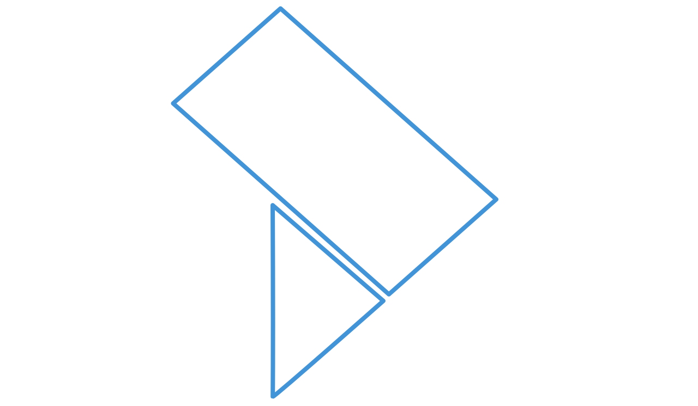

GeDon Tessuti
Il lavoro quotidiano della banca, più semplice
Il gestionale web che accompagna ogni tessuto dall’arrivo in banca all’innesto: accetta, lavora, conserva e distribuisce in un unico sistema, senza registri di carta e senza ricopiare i dati, con la tracciabilità sempre pronta per controlli e ispezioni.
-
01
Accettazione
Donatore da GeDon, checklist di conformità e quarantena del tessuto.
-
02
Lavorazione
Processazione, sierologia, esami colturali e prodotti derivati, fino all’idoneità.
-
03
Conservazione
Frigoriferi, congelatori e criocontenitori configurabili, con lo stato di ogni tessuto.
-
04
Distribuzione
Lista d’attesa per urgenza, assegnazione al paziente, consegna e innesto.
Meno tempo sulle carte, più tempo sui tessuti
-
Niente doppie digitazioni
Il donatore arriva da GeDon con il codice SIT: leggi il barcode e la scheda è già compilata.
-
Codice SEC ed etichette in un clic
Il sistema genera il codice SEC con il suo barcode e le etichette QR per prodotti e provette.
-
Lo stato di ogni tessuto, sempre aggiornato
Quarantena, disponibile, consegnato, innestato: si aggiorna da solo a ogni passaggio.
-
Checklist al posto dei moduli
Conformità all’arrivo, sierologia, esami colturali e documenti allegati: tutto nella scheda del tessuto.
-
Report e indici già calcolati
Indici di qualità secondo il piano della banca, statistiche esportabili e schede pronte da stampare.
-
Sempre pronti per audit e ispezioni
Ogni operazione registra utente, data e ora: la storia di un tessuto, dal donatore all’innesto, è sempre lì.
Vediamolo sul percorso della tua banca
Ci trovi al congresso: fermaci per una demo, oppure scrivici e ne organizziamo una dedicata.
- Emailcommerciale@latraccia.it
- Telefono+39 0835 336836
- Webwww.latraccia.it
chiedi la demo